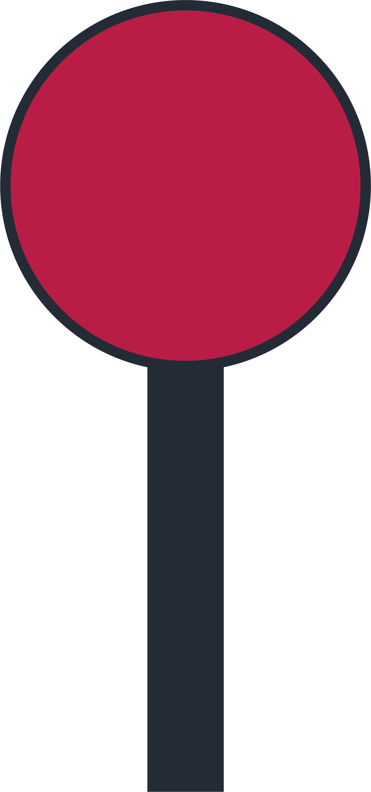
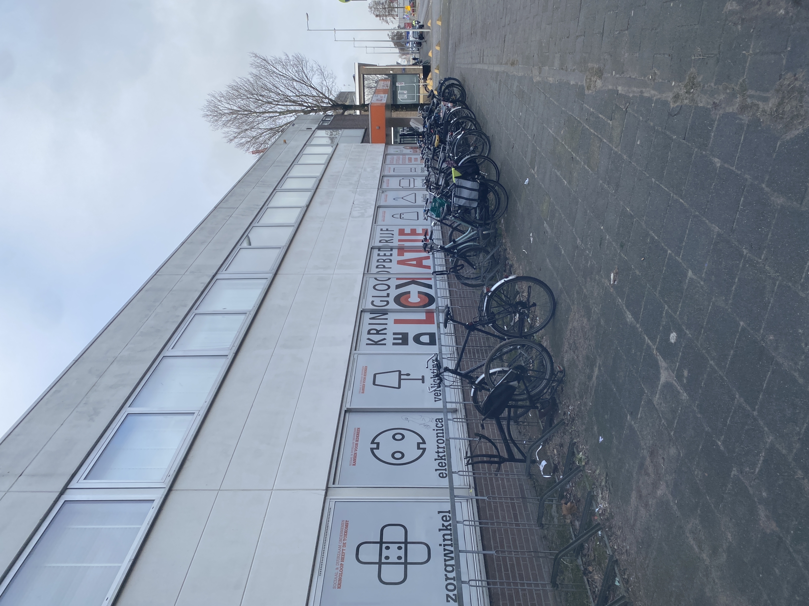

Locatie: Amsterdam Noord Distelweg 85
Locatie: Amsterdam Noord Buikslotermeerplein 6
Locatie: Amsterdam Oost 1e Oosterparkstraat 236

Dit is de Lokatie in Buikslotermeerplein 6. Hier zijn heel veel leuke producten te vinden. Het is zeer groot en heel fijn om doorheen te lopen. Ook wordt er duidelijk dat het een kringloopwinkel is die veel geeft om het milieu.